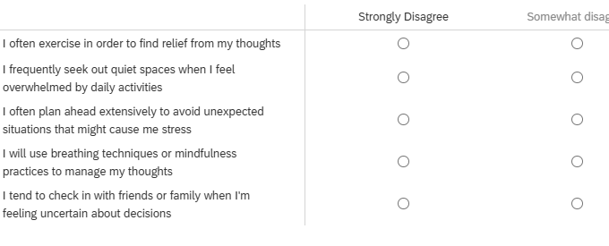
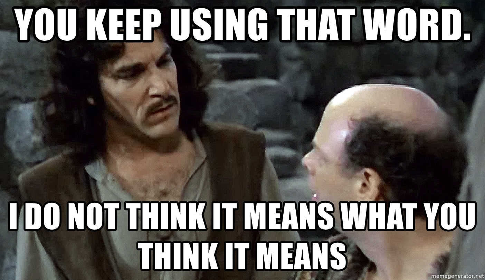
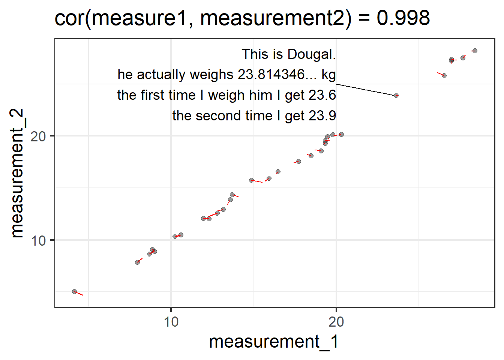
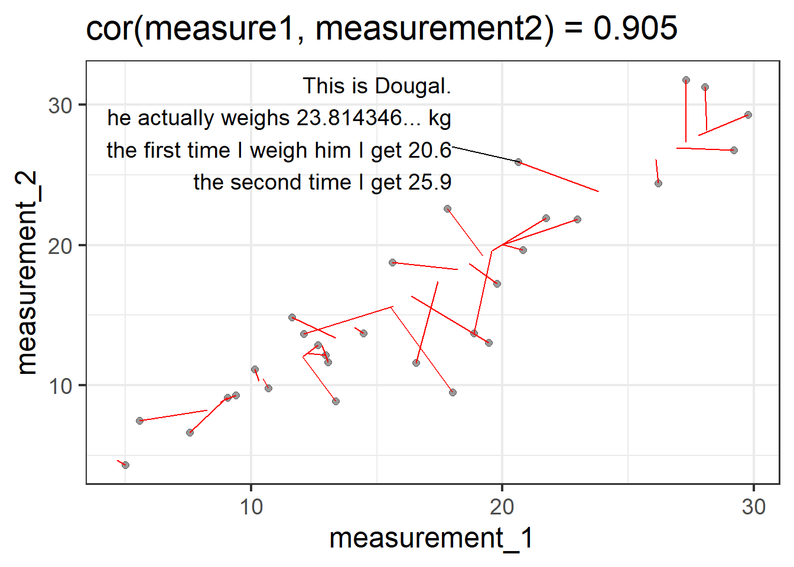
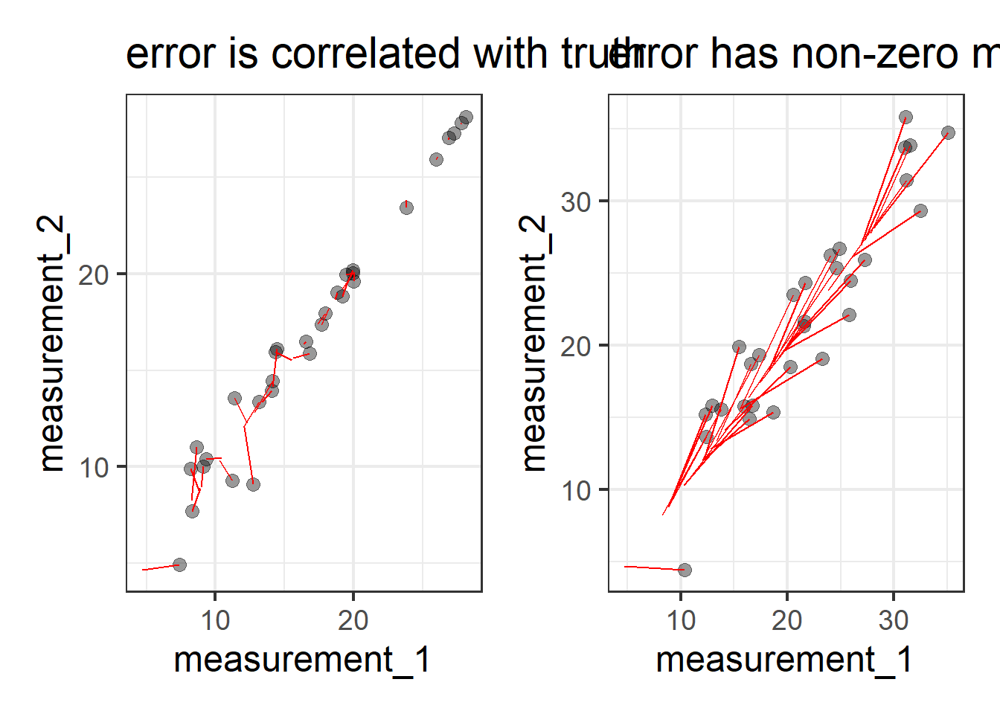
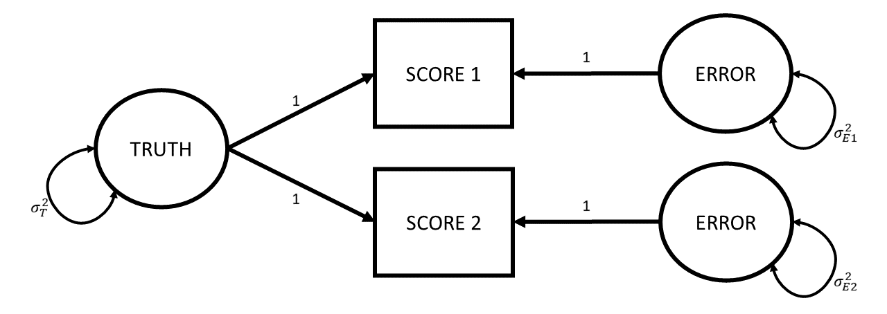

5: Reliability
- conceptual ideas about how we measure things

Bad measurement is sometimes a bit like the rotten apple that spoils the entire barrel.
A huge amount of research questions are focused on ‘associations between’ , ‘effects on’, ‘differences in’, ‘change in’ some construct or other. For any of these research studies to be successful we need to be able to actually measure that construct, and measure it well.
Consider the idea that we might have some research question that is concerned with how some intervention might reduce “anxiety”. While “anxiety” is quite an abstract concept, on the face of it, the idea that we all have different “levels of anxiety” feels okay. The problems come as soon as we attempt to quantify it. When we talk with friends we might tell them that we are feeling “a bit more anxious today”, but our friends will probably never respond with “how much more? 3? or 4?”.
Because quantifying abstract psychological constructs is difficult, in part because these constructs are multifaceted. We want to be confident that when we ask person A about their anxiety, they are responding about the same thing as when we ask person B. One way to help feel more confident is to ask a bunch of questions. So we might end up with 5 questions that we ask them to indicate agreement/disagreement with (Figure 1), and then we’re up and running!
Very loosely, however, we can differentiate between two measurement related threats to research. The first we should think about is termed “construct validity” and essentially is concerned with whether people filling out the questionnaire in Figure 1 is actually capturing anything about their levels of “anxiety”. If you take a look at the wordings of the questions, you could argue that they are all statements about behaviours we consider to be a result of anxiety (i.e., avoidance behaviours, excessive worry, reassurance seeking, etc). But switch your perspective and consider how they could be seen as behaviours that represent healthy coping strategies (i.e., proactive stress management, social support utilization etc.). So what do these 5 questionnaire items measure? What does indicating “strongly agree” to all 5 items mean? More “anxiety”? Better “coping strategies”? Neither? Both?
The second measurement related threat is the idea of the “consistency” or “reliability” of measurement. This is the concern that if a person fills out the questionnaire in Figure 1 multiple times (assuming they have not changed in their underlying anxiety), then we would hope that their score is the same on both occasions.
- Validity: whether our measurement instrument actually measures the thing we think it measures.
- Reliability: how consistently our measurement instrument measures whatever it is measuring.
Within each of the threats of “validity” and “reliability”, there are various of different forms. We will go through a selection of these and how we might try and assess them. It is worth keeping in mind these two broad definitions above, which will underpin everything we discuss here.
One initial, and incredibly important thing to remember is that these concepts of “reliability” and “validity” are ultimately a property of our sample, and not of a measure. Just because a measurement tool appears to be valid and reliable in one instance, it does not mean that it will continue to be valid or reliable for any other persons, or in any other place, or at any other time.
What this means is that we can’t just say “I used [insert measure here] that has been shown to be valid and reliable”, and just assume that these properties hold for our usage.
Construct Validity
There are various different forms of validity, but broadly speaking they all come down to the idea of “if it walks like a duck and quacks like a duck…”1
Face Validity
Face validity is essentially asking whether, “on the face of it”, the measure appears to be measuring the construct. For instance, if we are measuring the construct “anxiety”, then do we have questions that refer to things that are about “anxiety”? These might be questions referring to “anxious”/“worried” feelings, or behaviours that we believe to be indicative of anxiety (fidgetting, trouble sleeping) etc. For a more objective example: a maths test that contains only arithmetic problems has good face validity of measuring math ability.
Face validity: The extent to which a test appears, on the surface, to measure what it claims to measure.
Face validity is not sufficient for claiming construct validity. For instance, back in the not so distant past, there were many prominent psychologists for whom measuring peoples’ skulls or looking at people’s handwriting were face-valid approaches of assessing personality.
Similarly, face validity is not necessary for construct validity. We could have TODO
Content Validity
The term c
Convergent & Discriminant Validity
Another way in which we
Convergent validity - The degree to which scores on a test are related to scores on other measures of the same construct. For instance, a new depression inventory correlating strongly with the Beck Depression Inventory. Discriminant validity - The extent to which a test does not correlate strongly with measures of unrelated constructs. For example, a depression test showing weak correlation with an anxiety test.
predictive/criterion validity
Criterion validity - The extent to which test scores are related to an external criterion. For example, aptitude test scores predicting job performance.
reliability
The very high level idea of reliability can be captured by the various words we could use instead of ‘reliability’. We are talking about how reliable/consistent/repeatable/precise/stable/dependable/<insert-synonym-here> a measurement is. However, we need a more specific, mathematical definition of “reliability” in order to be able to try and quantify it for a given measurement instrument.
The easiest way to get into thinking about reliability is probably to think about repeated assessment, as we have already hinted at earlier. If we measure person \(i\) using instrument \(x\) and then we measure person \(i\) using instrument \(x\) a second time (and we assume they haven’t changed on the underlying construct), then a perfectly reliable measure would give us the exact same scores.
For example, a reliable method of weighing a dog is to use the big specialised scales for pets that they have at the vets. A less reliable way is to awkwardly carry your dog onto your cheap bathroom scales and subtract your weight. Even less reliable would be to go and do this outside on a bumpy surface like gravel, where the scales don’t work well, and deciding to do it standing on one leg…
So one initial way to think about reliability in mathematical terms is to suppose that we do the measurement twice on the same units and see how well their scores correlate.


This is great as a way to start thinking about reliability, but it is hard to think about in situations where we haven’t measured the same units twice. A more generalisable way to conceive of reliability can be got at by thinking about measurement in a diagrammatic way. Which is great, because I love diagrams!
truth and error
love truth but pardon error (Voltaire)
So let’s go back to basics. Whenever we measure something, we get a number2. But there are almost always two things that make that number what it is: there is the “true” value of the construct that we’re measuring, and then there is error. This error might come from different things - it could be rounding error (our scales only display to the 10th of a kg), it could be random error due to a poor instrument (e.g., using our bathroom scales on some bumpy cobbles that happen to make it weigh higher/lower depending on where we position the scales), or it could be other stray causes that are unrelated to the construct we’re trying to measure (e.g., measurements of anxiety often include a question about sleep habits, but there are lots of other things that influence sleep!).
Drawing our diagram then, when we measure something, we observe one thing (the score), but this is caused by two unobserved things (the truth and some error). Following the conventions for drawing these sorts of diagram, things we observe are in squares, and unobservables are in circles.

One way to make the idea of “truth” here a little more concrete, let’s suppose that I took my shoddy bathroom scales and weighed Dougal over and over and over and over again (ad infinitum). The numbers I get out will follow a normal distribution, the center of which we can think of as Dougal’s “true” weight (assuming the scales aren’t systematically biased). We often see weights a little higher, often a little lower, less often do we see things a lot higher or lower, etc. So “Truth” here refers to the idea of the ‘long run’ measurement.

Now let’s expand from thinking about Dougal specifically to thinking about our proposed measurement process for weighing dogs in general. We have our “instrument” for measuring a dog’s weights (our bathroom scales), and we can imagine all the measurements we might use this instrument for. For any dog we might use these scales to weigh, the observed number we see on the scales is going to be driven by 1) that dog’s true weight, and 2) a little bit of error. Just like all the true weights of all dogs have a variance (some are big dogs that weigh a lot, some a little dogs that weigh less etc.), the errors that contribute to our measurements also have a variance (some readings will be a bit higher than truth, some will be a bit lower).
If we add these variances to our diagram, we simply add curved lines to our “Truth” and “Error” variables:

The really useful thing about diagrams like these is that they represent theoretical models that can be used to imply what we would expect to see in our observed variables (we saw this idea in CFA). One crucial thing that this specific model of measurement implies is that the variance we would see in our observed scores is going to be the variance in the true scores plus the variance in the errors.
\[ Var(\text{Observed Scores}) = Var(\text{True Scores}) + Var(\text{Errors}) \]
As it turns out, we can actually find an intuitive way of thinking about this equation Let’s take it to the extreme: If my measurement instrument is incredibly good in weighing dogs, then the variance in the errors is much much smaller (i.e., all measurements are within 0.1kg of the true score). If my measurement instrument is incredibly bad at weighing dogs, then the variance in errors is much bigger (sometimes when I weigh a dog that is ‘in truth’ 23.814346….kg, I will get a score of 15kg, sometimes I will get a score of 28kg etc).
So a really generalisable way of thinking about reliability of measurement is to view it as “how much of the variance in our observed scores is due to true variance?”.
\[ \begin{align} \text{reliability} &= \frac{Var(\text{true scores})}{Var(\text{observed scores})} \\ & \quad \\ &= \frac{Var(\text{true scores})}{Var(\text{true scores}) + Var(\text{errors})} \end{align} \]
why not just “how much error variance is there?”
We can’t simply use the variance of measurement error on its own to quantify ‘reliability’ here, because what counts as “small” or “large” amounts of error depends entirely on the quantity we are measuring.
For example, consider the following three scenarios:
- I am measuring the weight of dogs, and my scales are a bit off each time - there is a little bit of error. The errors have a variance of 1kg
- I am measuring the weight of dogs, and my scales are wayy off each time - there is a massive amount of error. The errors have a variance of 100kg
- I am measuring the weight of elephants, and my scales are a little bit off each time - there is a little bit of error. The errors have a variance of 100kg
The size of the error variance (1kg or 100kg) by itself doesn’t determine how much “off” (a little bit off vs waayy off) we consider the measurements to be. What is important is how big this error variance is relative to the true variance of the things being measured.
Elephants’ weights vary between 1800 and 4500kg, so mis-measuring by 100kg isn’t really that bad in the grand scheme of things. But dogs’ weights vary between c5kg and 50kg, so mis-measuring by 100kg is ridiculous.
Optional: other implied assumptions of this model of measurement
These diagrams are a great way to also see the assumptions that are underpinning our theories.
There are two further implications by thinking of our measurements as it is drawn in Figure 4.
Errors are not correlated with the truth.
In the diagram, this is represented by the fact that there is no arrow between the Truth and Error variables. What this means in an applied setting is that we assume that the amount of measurement error isn’t less/more for someone who has a low true value than it is for someone with a high one. Continuing with the act of weighing dogs, this is the assumption that if my scales are showing a value that is \(\pm1kg\), then it is \(\pm1kg\) for a dog that actually weighs 5kg and for one that actually weighs 50kg. You could imagine this not being the case if, e.g., the 50kg dog squashed the scales down so much that the scales always showed \(50 \pm 0.1kg\), and the scales didn’t work as well for the little 5kg dog where we see scores of \(5 \pm 3kg\).Error has mean zero. When it gets to diagrams and covariance-based models (like CFA etc), we don’t really talk much about the means anymore. In these diagrams we introduce means as a constant fixed number, in triangles (if squares are for observed variables, circles are unobserved/latent variables, then we need a new shape).
So more explicitly our diagram would look like:
todo

This way of thinking about reliability might seem nice and intuitive, but if we think about having to actually quantify reliability this way, then we suddenly realise that we don’t have enough information… We are essentially saying “observed score = unobserved truth + unobserved error”. This is like being given a math problem of “23.5 = T + E, please solve” — it’s impossible!
Things get a lot better when we have multiple scores. This is because we have two scores, and two errors, but only one truth. Just as before, we can sort of see some implications of this diagram:
- the true value hasn’t changed between assessments
- the true value contributes the same to each assessment
- there is the same amount of error at each assessment. i.e,. it’s not the case that the 2nd assessment involves much bigger or smaller errors than the first (this is \(\sigma^2_{E1} = \sigma^2_{E2}\)
- the errors are uncorrelated - happening to have score 1 be a little bit above your true value tells us nothing about how off our score will be at time 2.
TODO fix this image to fix sigmas the same

TODO so we are now saying something like 23.5 = T + E 23.6 = T + E
optional - where did the correlation between repeated measurements go?
Somewhere along the way we’ve lost the whole idea of “consistency across repeated assessment”? Is that reliability? or is reliability about the ratio of true variance to observed score variance?
It’s both!
To turn covariance into a correlation, we must divide it by the standard deviations of the two variables - \(cor_{xy} = \frac{cov_{xy}}{sd_x \cdot sd_y}\).
So let’s take the correlation between scores and express it as the covariance divided by the standard deviations. Remember that standard deviation is the square root of variance, so let’s write them as \(\sqrt{\sigma^2}\) instead (the reason will become clear in a second).
\[ \begin{align} cor_{score_1,score_2} &= \frac{cov_{score1,score2}}{\sigma_{score1} \cdot \sigma_{score2}} \\ \, \qquad \\ &= \frac{cov_{score1,score2}}{\sqrt{\sigma^2_{score1}} \cdot \sqrt{\sigma^2_{score2}}} \\ \end{align} \]
As we know, these diagrams like in TODO imply covariances between observed variables. In this case, the observed variables are the two scores, and cccording to this diagram, the only way that Score 1 and Score 2 co-vary is via the true values. So \(cov_{score_1, score_2}\) is going to be \(\sigma^2_T\).
And we have just talked about how the variance in observed scores is equal to the variance in the true values plus the variance in the errors, and so the variance of Score 1 is going to be \(\sigma^2_T + \sigma^2_{E1}\).
We can substitute all these in to the above, and we would get:
\[ \begin{align} &= \frac{\sigma^2_T}{\sqrt{(\sigma^2_T + \sigma^2_E)} \cdot \sqrt{(\sigma_T^2 + \sigma^2_E)}} \\ \end{align} \] The bottom part then simplifies to:
\[ \begin{align} & = \frac{\sigma^2_T}{\sigma^2_T + \sigma^2_E} \end{align} \]
And we’re right back at the “proportion of true variance out of total variance (true variance + error variance)”.
So where do these repeated assessments come from? There are lots of ways in which we can think of having these sort of “parallel tests” (having multiple instances of measurements of the same construct).
we could:
- take a measurement, wait a bit (how long?), and then take another measurement
- take a measurement with version-A of the measurement instrument and then take a measurement with version-B
- get two (or more) people to measure the same units
- administer a whole bunch of different measurement instruments
For each of these situations there are specific calculations that tend to get used to quantify the reliability. They tend to differ because of how they are partitioning variance in to “true variance” and “error variance”.
test-retest reliability
- Test-retest - Consistency of test scores when the same test is administered to the same group on two different occasions.
alternate forms reliability
- alternate forms - Consistency of scores between two equivalent versions of a test that measure the same construct.
inter-rater reliability
- Inter-rater - Degree of agreement or consistency between two or more raters/observers scoring the same behaviour or responses.
internal consistency
- Internal consistency - Consistency of responses across items within the same test
coefficient alpha
scale scores assume tau equivalent
mcdonald’s omega
factor scores assume congeneric
the impact of reliability
attenuation
reliability is the ceiling for validity
Footnotes
Amusingly, the word “duck” is apparently not a meaningful part of ornithological taxonomy. There are some things that we call “geese” that are more closely related to some things that we call “ducks” than other things that we call “ducks”. And don’t get started on “goosanders”!↩︎
(hooray, I love numbers almost as much as I love diagrams!↩︎